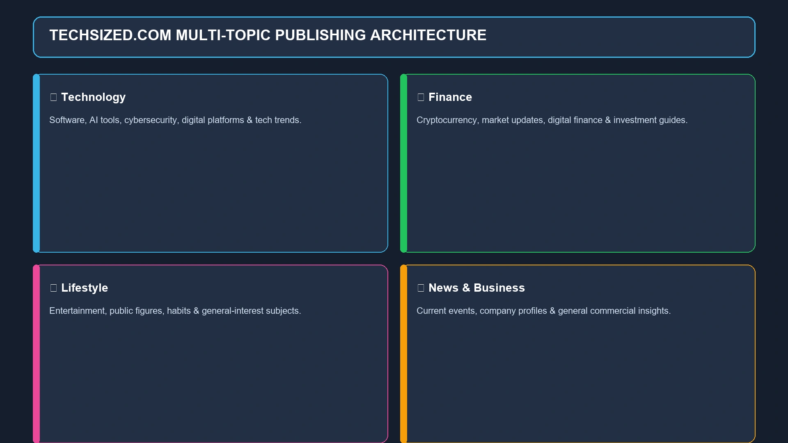
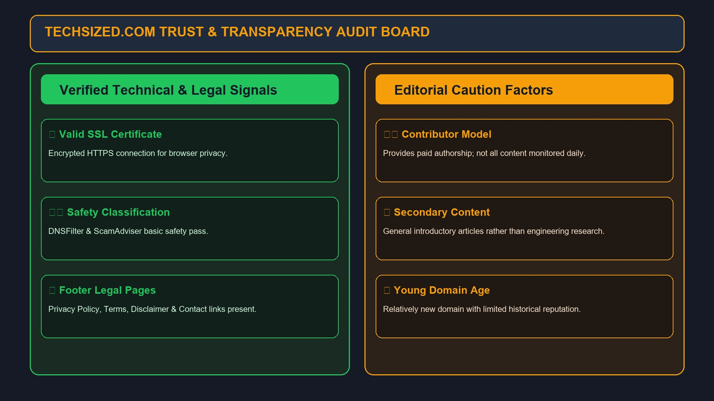
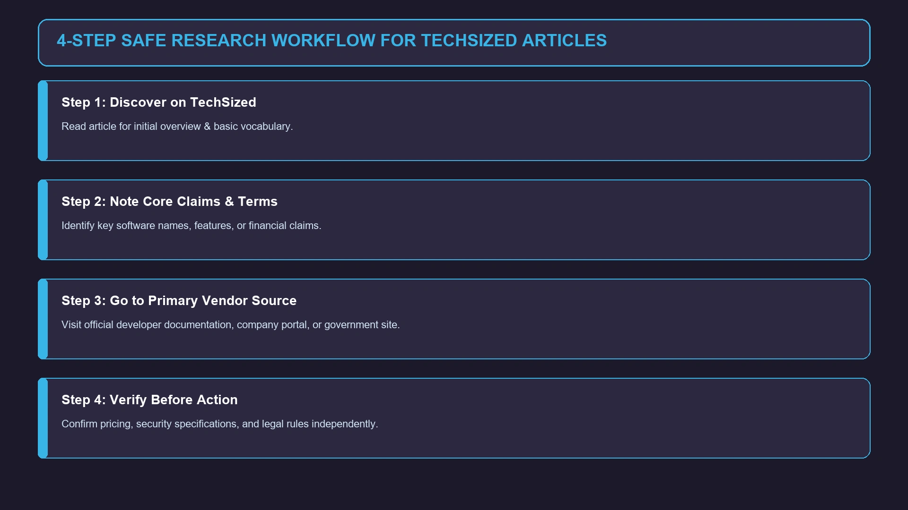

Techsized Com: What Is TechSized.com and Is It Worth Visiting?
If you have searched for Techsized com, you are probably trying to find the website behind the name, understand what it publishes, or decide whether it is worth trusting.

If you have searched for Techsized com, you are probably trying to find the website behind the name, understand what it publishes, or decide whether it is worth trusting.
TechSized.com presents itself as a technology-focused publishing website built around “Technology with Smart Solutions.” At the same time, its current content goes beyond traditional technology news. The site has sections covering technology, finance, lifestyle, news, and other general-interest subjects.
That makes TechSized a little different from a narrowly focused technology publication.
It is better understood as a multi-topic digital content platform with a strong technology identity rather than a site dedicated exclusively to gadgets, software, or breaking technology news.
This guide takes a closer look at TechSized.com, including what it covers, the type of articles you can find there, its trust and transparency signals, safety considerations, and what readers should keep in mind when using information from the site.
What Is Techsized Com?
Techsized com is the search term people commonly use when looking for TechSized.com, a website that publishes informational articles across technology and several related categories.
The site's homepage currently describes its purpose as providing technology content and smart solutions. Its visible sections include Tech, Finance, Lifestyle, News, and other content categories.
The website does not function like a software product, online marketplace, or technology company offering a single service. Instead, its primary activity is digital publishing.
In simple terms, TechSized is a content website where readers can find articles about technology, online services, business-related subjects, finance, digital trends, and lifestyle topics.
Quick overview
| Feature | TechSized.com |
|---|---|
| Website type | Digital publishing / information website |
| Main identity | Technology and smart solutions |
| Primary focus | Technology-related information |
| Other topics | Finance, lifestyle, news and general-interest subjects |
| Content format | Online articles and guides |
| Audience | General internet users and technology readers |
| Domain | TechSized.com |
Because the site covers several subjects, visitors should look at the individual article and its sources rather than assuming every page has the same level of expertise.
What Does TechSized.com Cover?

One of the most noticeable characteristics of TechSized is its broad editorial mix.
The website's current homepage contains technology articles alongside finance and lifestyle material. For example, its Tech section includes an article about Strategyzer, while Finance contains topics involving cryptocurrency and investment-related subjects. Lifestyle also includes articles about public figures and other general-interest subjects.
This creates a fairly wide content footprint.
Technology
The technology section can cover subjects such as:
- Software and digital tools
- Business technology
- Online platforms
- Artificial intelligence
- Cybersecurity
- Digital services
- Technology trends
- Productivity
- Internet-related topics
For readers who want a broad overview rather than highly specialized engineering documentation, this type of content can be useful.
Finance
TechSized also publishes finance-related material, including cryptocurrency and investment topics.
This is where readers should be more selective.
A general technology blog can explain financial concepts, but an article about investing, cryptocurrency, markets, or financial products should not automatically be treated as professional financial advice.
Lifestyle
The site also maintains lifestyle content that extends beyond technology. Current examples include entertainment and public-figure topics.
This broad approach means TechSized is not intended only for developers or technology professionals.
Is TechSized.com a Technology Website?
Yes, but with an important qualification.
Technology is clearly part of TechSized's identity. The site's branding describes it around technology and smart solutions, and its navigation contains a dedicated Tech category.
However, it would be inaccurate to describe TechSized as a pure technology publication.
Its current website also contains:
- Finance content
- Lifestyle articles
- News
- Business-related subjects
- Cryptocurrency topics
- General informational articles
So the most accurate description is:
TechSized.com is a multi-topic content website with technology as a central theme.
That distinction helps explain why someone searching for a gadget-only publication may find the site broader than expected.
What Kind of Articles Can You Find on TechSized?
TechSized follows a general informational publishing model.
Instead of focusing on one narrow subject, the site publishes individual articles around different search topics.
Some current examples demonstrate this variety. The homepage lists articles about Strategyzer, cryptocurrency platforms, digital finance, public figures, technology, and other subjects.
This model has one obvious advantage: there is a lot of variety.
A reader interested in technology can discover related business or finance topics without leaving the website.
The trade-off is that article quality may vary from one subject to another.
A strong article about a general technology concept does not necessarily mean an article about finance, cryptocurrency, health, or legal issues should be treated with the same level of authority.
TechSized.com Review: What Stands Out?
There are several things worth considering when evaluating TechSized.
1. Broad Topic Coverage
The biggest strength is the range of subjects.
Instead of publishing only product announcements or technology news, TechSized covers multiple areas of digital life.
That makes it potentially useful for casual readers who enjoy discovering different topics.
2. Easy-to-Understand Content
The site's stated positioning focuses on technology and “smart solutions,” suggesting an effort to make digital subjects accessible to ordinary readers rather than limiting the site to specialists.
For beginners, explanatory articles can be easier to approach than highly technical documentation.
3. Large Variety of Search Topics
The site publishes articles targeting many different subjects and named entities.
That can make it useful when researching an unfamiliar company, technology term, digital platform, or business concept.
But readers should still distinguish between an introductory article and authoritative primary documentation.
Is TechSized.com Legit?
This is one of the most common questions surrounding unfamiliar websites.
Based on the current website and available third-party signals, there is no clear evidence that TechSized.com is a fake website simply because it is relatively new or has limited public recognition.
ScamAdviser currently describes the domain as likely safe to access and notes a valid SSL certificate and a DNSFilter safety classification. However, it also flags the site's relatively low traffic ranking and young domain age.
That is a useful distinction.
Safe to visit does not mean every article is authoritative.
SSL encryption only means that the connection between the browser and website is protected. It does not verify the accuracy of every article published on the website.
Similarly, a low traffic ranking does not prove that a site is fraudulent. New or small websites can naturally have limited traffic.
The sensible conclusion is:
TechSized.com can be evaluated as a functioning publishing website, but readers should judge important claims independently rather than relying on the domain name alone.
TechSized.com Trust and Transparency

Transparency is particularly important for websites publishing information about finance, technology, health, cryptocurrency, and other subjects where readers may make decisions based on what they read.
TechSized provides About, Contact, Disclaimer, Privacy Policy, Terms and Conditions, and Write For Us links in its footer.
There is also a particularly important disclosure on the current site.
TechSized states that it provides paid authorship to contributors and does not monitor all contributed content daily.
That does not automatically make the site unreliable.
But it does mean readers should pay attention to who wrote an article, what evidence it provides, and whether the information can be independently verified.
This is especially relevant when an article discusses:
- Investments
- Cryptocurrency
- Cybersecurity
- Medical subjects
- Legal matters
- Financial products
- Business decisions
For high-stakes subjects, primary sources should take priority.
Does TechSized.com Have an Official Editorial Team?
The website provides general information about its purpose, but its current public-facing pages do not provide the same level of detailed editorial information that you would find at a large established newsroom.
This is one area where readers should remain realistic.
A website can publish useful information without having the institutional structure of a major media organization.
At the same time, readers should not confuse a polished website design with evidence of subject-matter expertise.
When evaluating an article, look for:
- Author information
- Publication date
- Updated date
- Sources
- Original research
- Links to primary references
- Specific evidence
- Clear disclosures
These signals are often more meaningful than the site's appearance.
Does TechSized.com Publish Paid Content?
The current website explicitly says that it provides paid authorship to contributors. It also says that not all content is monitored daily.
This is important context for understanding the platform.
Paid contributor content is not automatically bad. Many publishing websites accept sponsored, contributed, or guest content.
The important question is whether the individual article clearly communicates its purpose and whether its claims can be independently checked.
If an article recommends a product, service, investment, or financial opportunity, readers should investigate beyond the article before making a decision.
TechSized.com and Technology Research

TechSized can be useful as a starting point for research.
Suppose you encounter an unfamiliar technology platform.
An introductory TechSized article may help you understand:
- What the platform is
- What problem it claims to solve
- Who might use it
- What terminology is associated with it
- What related concepts you should research next
But there is an important second step.
After learning the basics, go to the technology company's official documentation, product page, developer documentation, or other primary source.
This two-step approach is much safer:
TechSized → initial understanding → primary source → verification
That prevents a general-interest article from becoming your only source of technical information.
TechSized.com for Beginners
Beginners may find broad technology websites useful because they don't require deep technical knowledge before starting.
For example, someone unfamiliar with artificial intelligence, software platforms, cybersecurity, digital payments, or online business tools may first want a simple explanation.
That is where general technology publishing can be valuable.
Instead of immediately reading highly technical documentation, a reader can first build basic vocabulary and context.
Once the fundamentals are clear, more authoritative documentation becomes easier to understand.
TechSized.com for Technology Professionals
Professionals should approach the site differently.
If you are a developer, IT administrator, cybersecurity professional, investor, or technology executive, a general article may be useful for discovering a topic but should rarely be the final authority.
For professional research, verify important information against sources such as:
- Official vendor documentation
- Developer documentation
- Government websites
- Academic research
- Regulatory filings
- Product documentation
- Security advisories
- Original company announcements
TechSized can help with discovery, but specialized decisions require stronger primary evidence.
TechSized.com vs a Traditional Tech News Website
A traditional technology publication usually concentrates on technology journalism.
TechSized is broader.
| Area | TechSized.com | Traditional tech publication |
|---|---|---|
| Technology | Yes | Yes |
| Finance | Yes | Sometimes |
| Lifestyle | Yes | Limited |
| General-interest content | Yes | Usually limited |
| Product/news reporting | Some | Often central |
| Beginner guides | Common | Common |
| Narrow technical specialization | Limited | Depends on publication |
This means the two models serve different purposes.
If you want a quick overview of a broad digital topic, TechSized may be sufficient.
If you want investigative reporting, highly specialized technical analysis, or breaking industry news, a dedicated publication or primary source may be a better choice.
Is TechSized.com Good for SEO and Digital Research?
Interestingly, TechSized itself is also an example of a modern search-driven publishing model.
Its pages target individual topics and named entities, allowing people to discover articles through search engines.
That makes the site relevant not only to readers but also to people studying:
- Content marketing
- SEO
- Topical coverage
- Branded search
- Digital publishing
- Search intent
- Content strategy
A search for “Techsized com” itself demonstrates branded search intent.
Some users want the website.
Others want a review.
Others want to know whether the site is legitimate.
And some simply want to understand what TechSized publishes.
A good page targeting the keyword should therefore answer all of those questions naturally rather than repeating the exact keyword dozens of times.
What Is the Difference Between “Techsized” and “Techsized Com”?
There is a small but important difference in search intent.
Techsized
This is the shorter brand-style query.
Someone searching it may already know the website name and simply want information about the brand.
Techsized com
This looks more like a domain-navigation query.
The user may be trying to locate the website or confirm that TechSized.com is the correct domain.
Techsized.com review
This is clearly an evaluation query.
The person is probably interested in:
- Legitimacy
- Safety
- Content quality
- Trust
- Reputation
- Website purpose
A comprehensive article should naturally address all three search intents.
How to Evaluate Information Published on TechSized
You do not need to distrust every article.
Instead, use a simple verification process.
Check the author
Look at who wrote the article and whether that person appears qualified to discuss the subject.
Check the date
Technology changes quickly.
An article about software, AI, cybersecurity, cryptocurrency, or digital services can become outdated.
Follow the sources
If the article makes a specific claim, see whether it links to an original source.
Separate facts from opinions
Statements such as “this is the best platform” are opinions unless supported by clear criteria and evidence.
Verify high-stakes information
Never rely on one general-interest website for an important financial, legal, medical, or security decision.
Is TechSized.com Safe to Use?
From a basic website-security perspective, third-party scanning information currently identifies a valid SSL certificate and does not classify the domain as clearly malicious. ScamAdviser describes it as likely safe while also noting that the domain is young and has relatively low traffic.
Still, normal internet safety rules apply.
Avoid entering sensitive information unless there is a clear reason to do so.
Be especially careful if a third-party article asks you to:
- Download unknown software
- Install browser extensions
- Provide financial information
- Send cryptocurrency
- Enter passwords
- Share authentication codes
- Connect a financial account
- Follow an unfamiliar payment link
The safety of an individual external link should be evaluated separately from the safety of the publishing website itself.
What Are the Limitations of TechSized.com?
A balanced review should also discuss limitations.
Broad editorial focus
The site covers many different categories. That is convenient, but it can also mean that readers looking for deep specialization may need additional sources.
Contributor model
The site's own disclosure says it provides paid authorship and does not monitor all content daily.
Readers should therefore evaluate individual articles rather than treating every page as professionally edited journalism.
Limited independent reputation
Third-party reputation information about the domain is still relatively limited. ScamAdviser notes the domain's young age and low traffic ranking.
This does not prove anything negative, but it means there is less historical reputation to rely upon.
Mixed subject matter
Technology, finance, lifestyle, and general-interest articles require very different types of expertise.
Readers should adjust their level of verification according to the subject.
Who Should Read TechSized.com?
TechSized may be a good fit for:
- Casual technology readers
- Beginners
- People researching unfamiliar digital concepts
- Readers interested in technology and business
- People exploring online platforms and trends
- Users who enjoy mixed technology and lifestyle content
- SEO and content researchers studying branded websites
It may be less suitable as the only source for:
- Professional investment decisions
- Medical decisions
- Legal advice
- Security incident response
- Production engineering decisions
- Highly technical software implementation
For those subjects, primary and professionally authoritative sources should be consulted.
What Makes TechSized Different?
The site's strongest differentiator is not a single software product or proprietary technology.
It is the combination of technology-oriented branding and broad informational publishing.
TechSized positions itself around technology and smart solutions while publishing content that crosses into finance, lifestyle, news, business, cryptocurrency, and other areas.
That makes it closer to a general digital information hub than a specialized developer publication.
For the average reader, that can be convenient.
For an expert reader, it means the usefulness of the site depends heavily on the specific article.
Frequently Asked Questions About Techsized Com
Techsized com generally refers to TechSized.com, a digital publishing website focused on technology and smart solutions while also covering areas such as finance, lifestyle, news, and other general-interest topics.
Yes. Technology is a central part of the site's identity and navigation, although the website publishes considerably more than technology-only content.
TechSized.com is an active website with published content and standard website pages. Third-party site-safety information currently describes the domain as likely safe to access, while also noting that it is relatively young and has limited traffic.
There is no indication from the available domain-level safety information that TechSized.com is inherently malicious. However, users should still evaluate downloads, external links, and requests for personal or financial information independently.
Current content includes technology, finance, lifestyle, news, business-related subjects, cryptocurrency, and other informational topics.
TechSized publishes technology-related articles, but it is broader than a conventional breaking-news technology publication.
Use financial content as general information rather than personalized financial advice. Important claims involving investments, cryptocurrency, or financial products should be verified using primary and authoritative sources.
Yes. The website has a Write For Us section and states in its disclosure that it provides paid authorship to contributors.
TechSized is primarily presented as a website and digital publishing platform. There is no clear indication on the current homepage that an official standalone mobile application is central to its service.
No clear evidence indicates that TechSized.com is primarily a software company. Its current website is structured primarily as an online content and publishing platform.
Final Verdict: Should You Use TechSized.com?
TechSized.com is best viewed as a broad technology-oriented information website rather than a specialized technology authority.
Its current site offers a mixture of technology, finance, lifestyle, news, business, cryptocurrency, and other content.
There is nothing inherently wrong with that model. In fact, it can be useful for readers who want simple explanations and a wide range of subjects in one place.
The main thing to remember is context.
A general article about a technology concept can be a useful starting point. A claim involving money, security, health, law, or professional technology decisions deserves stronger verification.
The site's own disclosure about paid authorship and limited daily monitoring of contributed content makes that distinction even more important.
So, if your search began with “Techsized com,” the short answer is:
TechSized.com is an active multi-topic digital publishing website with a technology-focused identity. It can be useful for general information and topic discovery, but important claims should be checked against authoritative primary sources.
That is a more useful way to evaluate TechSized than simply labeling it “good” or “bad.”
For more such useful information read our site crackstube.blog
Enjoyed this Technology guide?
Explore more Tech articles or submit your own guest contribution on CracksTube.